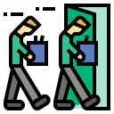
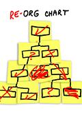

Charting Your Pathin Software Development@ReadySetAgile |
|
John Riley
Free Code Camp Columbus Administrator
|
### Share Your Experience
---
Join the Free Code Camp Columbus Discord Server!
### Connections
---
### How this sections works
---
### Our industry is complex now!
---

Layoffs

Reorgs
AI
Burnout
#### What goes into a career?
---
#### What agilites excel in techncial roles?
---
### What does science say?
---
Science Break: Team performace can be measured!
In a study of 64 analytic teams in the U. S. intelligence community, Research showed that 74% of the variance on a reliable performance was controlled by the presence of the five conditions:
In a study of 64 analytic teams in the U. S. intelligence community, Research showed that 74% of the variance on a reliable performance was controlled by the presence of the five conditions:
- Real team
- Compelling direction
- Enabling structure
- Supportive context
- Competent coaching
- J. Richard Hackman's Group Effectiveness model
### Technical Roles are Evolving!
---
Empirical Evidence of Continued Human Necessity
A 2025 study by METR found that AI tools can actually slow down development by 19%. because Developers still provide critical Error checking, Context interpretation, Security oversight
- arstechnica.com, arxiv.org, and others - Jul 14, 2025
What professionals are saying
"Employers are looking for people who can go with the flow, have flexibility in their schedules, and can do more with less. Your skills need to be quantifiable and easily consumable."
- Ali T., Account Manager, KForce - August 2025
The success of any employee is "measured with GWC - get it (how the job comes together), want it, and have the capacity to do it (time, emotionally)."
- Deborah A., referring to EOS - August 2025
### Job positions to consider
---
Product Manager
Project Manager / Scrum Master
Business Analyst
Solution Architect
Enterprise Architect
UI/UX Designer
Frontend Developer - Web
Frontend Developer - Mobile (iOS)
Frontend Developer - Mobile (Android)
Cross-Platform Mobile Developer
Backend Developer
Database Administrator (DBA)
Data Engineer
Cloud Architect
DevOps Engineer
Site Reliability Engineer (SRE)
Systems Administrator
Security Architect
Application Security Engineer
Cloud Security Engineer
Identity and Access Management (IAM) Specialist
QA Engineer / Tester
Performance Test Engineer
Accessibility Specialist
Data Scientist
Machine Learning Engineer
Data Analyst
Monitoring/Observability Engineer
Technical Support Engineer
Release Manager
Configuration Manager
Technical Writer
Compliance Specialist
Governance/Policy Manager
### Your turn
---
### Conclusions
---
GitHub Team Enablement Workshop
### Thank you!
---
John Riley
 @john.riley
@john.riley john@ReadySetAgile
john@ReadySetAgile
### References
---
| Unless otherwise noted, all data and facts are believed to be accurate at the time of this presentation fron the following sources: |